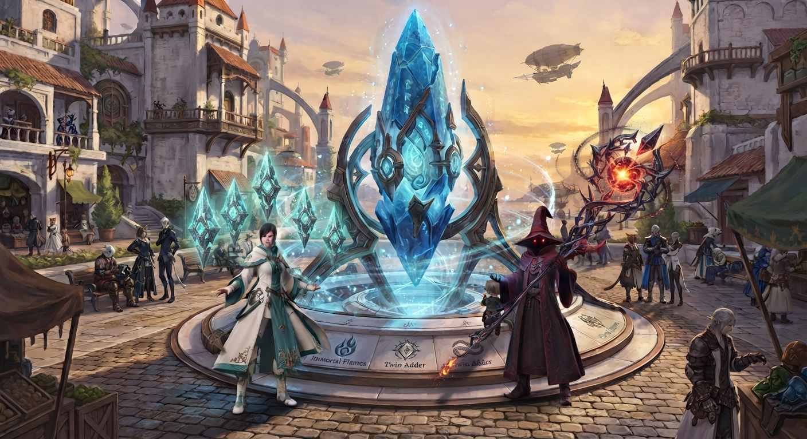

Exhibit 01 · MMORPG · 2013
Final Fantasy XIV
Few games get a second chance, and almost none use it this well. Final Fantasy XIV turned a troubled launch into a decade-plus story that millions of players share online.
About the Game
Final Fantasy XIV is a massively multiplayer online role-playing game (MMORPG) developed and published by Square Enix. Its first version launched in 2010 to harsh reviews. Instead of giving up, Square Enix put Naoki Yoshida in charge, rebuilt the game almost from scratch, and relaunched it in August 2013 as A Realm Reborn. In the story, the original world was even destroyed and reborn.
Players create a hero known as the Warrior of Light and explore the land of Eorzea and beyond. A single character can learn every job, so you can be a tank in the morning, a healer at lunch, and a crafter or fisher by evening.
Expansions
- Heavensward (2015): a dragon war centered on the snowy holy city of Ishgard.
- Stormblood (2017): a fight to free Ala Mhigo and Doma from the Garlean Empire.
- Shadowbringers (2019): a journey to a world drowning in endless light.
- Endwalker (2021): the conclusion of the saga that began in A Realm Reborn.
- Dawntrail (2024): a new adventure in a new continent, with the game's first major graphics update.
My Favorite Jobs
Because one character can learn every job, most players end up with favorites. Mine are a healer and a caster.

Sage: A healer introduced in Endwalker. Sages protect the party with shields and heal by dealing damage, so they're never just standing in the back.
Black Mage: A magic damage dealer that alternates between fire and ice spells. It hits incredibly hard, as long as you plan your position and don't have to move.
Why It's One of My Favorites
FFXIV has some of the best storytelling in any Final Fantasy game, and you experience it alongside a community of real players. Teaming up with strangers to beat a tough raid boss, dressing up your character, or simply hanging out in a city full of other players makes the world feel alive in a way single-player games can't.
Its comeback story is a lesson in listening to players and refusing to quit.